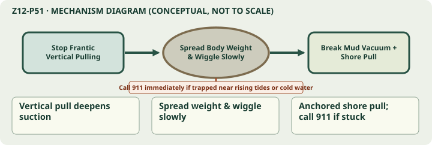

Z12-P51 · Extreme environments · New manuscript
Extract calmly from deep mud or bog muck without losing boots or exhausting core
Free a stuck leg safely from suction mud or tidal muck using weight distribution rather than frantic vertical pulling.
When it applies · Accidental step into deep marsh mud, beaver-pond silt, bog peat or coastal mudflats.
Equipment · Walking stick/pole, companion reach aid from firm ground and dry spare clothing afterward.

Actions
- Stop thrashing immediately—pulling straight up violently drives the other foot deeper into suction mud, pops boots off and risks heart-pounding exhaustion or cold immersion.[X12, X13, T01]
- Drop heavy backpack weight cleanly onto stable nearby ground or hand it to a shore-anchored partner, spread your body weight wide (leaning back/forward over a horizontal branch, pack or lying flatter onto firmer edges to break surface suction) and wiggle one leg slowly back and forth to let water break the vacuum seal around the boot.[X12, X13, ED]
- Have companions assist strictly from FIRM solid ground with a pole or rope—never walk right next to a stuck person in soft mud where helpers sink too.[X12, T01, X18]
Failure recognition · Struggling upright wildly in deep marsh or tidal mud until trapped thigh-deep as cold sets in or a coastal tide rises.[X12, X15]
Verify · Confirm slow vacuum-breaking leg wiggles, wide body-weight distribution and shore-anchored partner assistance only.[X12, ED]
Stop or change course · If trapped in deep mud—especially near rising coastal tides or freezing water—call 911 IMMEDIATELY with exact location before exhaustion or rising water overwhelms self-extraction.[T02, X15, X12]
Evidence and editorial notes
- T01 · American Red Cross · First Aid Steps (current web edition)
- Section: First Aid Steps > Check the scene; check the person · Conditions: Lay responder in United States; assess safety before contact
Support: Check scene safety, responsiveness, breathing and immediately life-threatening conditions.
Limitations: Lay guidance does not replace advanced clinical or rescue protocols. · Conflicting evidence: None; universal first-response opening gate.
Editorial note: Anchors scene-safety-first rule across Z01. · Specialist reviewer: EMS and wilderness medicine
Primary source · checked 2026-11-24 - T02 · American Red Cross · First Aid Steps (current web edition)
- Section: First Aid Steps > Call 9-1-1 · Conditions: Lay emergency response to unresponsiveness, abnormal breathing or severe bleeding
Support: Activate EMS and get needed equipment. Follow dispatcher directions and act within training.
Limitations: Remote locations may delay EMS arrival, requiring sustained stabilization after activation. · Conflicting evidence: None; aligns with NPS-E.
Editorial note: Mandates early emergency activation and dispatcher adherence. · Specialist reviewer: EMS and wilderness medicine
Primary source · checked 2026-11-24 - X12 · US EPA · What is a Wetland (current web edition)
- Section: What is a Wetland > Bogs, Fens, Swamps and Marshes · Conditions: Upper Midwest boreal bogs, marshes, beaver ponds and coastal wetlands
Support: Wetlands feature saturated hydric soils, floating vegetation mats (quaking bogs), hidden channels and fluctuating water tables that conceal deep muck, unstable footing and slow-draining floodwaters.
Limitations: Winter ice over bogs and wetlands is especially erratic due to decaying organic heat and seepage. · Conflicting evidence: Aligns with B014-P12 and NPS-WETLAND.
Editorial note: Core wetland terrain and quaking-bog hazard evidence in Z12. · Specialist reviewer: Wetland ecology and search and rescue
Primary source · checked 2026-11-24 - X13 · NPS · Wetlands Subject Guide (current web edition)
- Section: Wetlands > Footing, Immersion, Insects and Water Quality · Conditions: Travel near marshes, swamps, fens and slow-water estuaries
Support: Wetlands combine wet-cold immersion risk, concealed snags, unstable muck that drains energy rapidly, insect-borne disease exposure and high-organic/stagnant water requiring strict treatment or alternate sourcing.
Limitations: Footwear immersion and trench-foot/cold injury occur even in mild temperatures during prolonged wetland exposure. · Conflicting evidence: None; complements EPA-WETLAND and W16.
Editorial note: Grounds wetland navigation, foot-care and cold-wet exposure cards. · Specialist reviewer: Wilderness safety and wetland operations
Primary source · checked 2026-11-24 - X15 · NOAA NOS · Tides and Water Levels Education Tutorial (current web edition)
- Section: What are Tides? · tidal range and tidal current · Conditions: Ocean coastlines, sea caves, tidal flats and rocky headlands
Support: Tidal height and tidal current describe different properties. Rising or falling water may be accompanied by horizontal flow.
Limitations: Local timing and accessible routes require the actual site forecast and observations. Do not infer a safe route from a general tide stage. · Conflicting evidence: None; pairs with NOAA-COAST.
Editorial note: Grounds tidal-cutoff, headland and mudflat planning cards in Z12. · Specialist reviewer: Coastal navigation and marine safety
Primary source · checked 2026-11-24
Current assessment · A04-X15 (2026-11-25) · Bounded support confirmed (A04): Height and horizontal motion are different measurements. No timetable, passage window or slack-water inference. Limits: Specialist review PENDING (Coastal navigation and marine safety); publication HOLD. All release decisions pending. - X18 · Minnesota DNR · What if you fall in? (Current web edition)
- Section: Self-rescue after falling in · Conditions: Cold-water ice breakthrough on frozen lakes or rivers
Support: Face the direction you came from if able, regain breathing control, kick and use the edge or picks, and remain low after exit. Prior support is not guaranteed safe ice.
Limitations: Ice rescue carries extreme drowning risk for untrained rescuers; dry practice and qualified rescue review are mandatory. · Conflicting evidence: Directly aligns with B013 P06–P08 and P14; carries high-consequence specialist review hold.
Editorial note: Anchored in Z12 ice-breakthrough cards and logged in the Astra escalation register. · Specialist reviewer: Ice rescue, EMS and wilderness medicine
Primary source · checked 2026-11-24
Source lineage · EPA/NPS wetlands and ARC safety; new manuscript · Classification · New manuscript.